Referenzen
Schwerpunkte und Erfahrung
Langjährige nationale und internationale Erfahrung in betriebswirtschaftlichen, finanziellen und IT-nahen Fragestellungen.
- Erfahrung
Controlling und Finanzsteuerung
Begleitung bei Planung, Steuerung, Reporting und wirtschaftlicher Weiterentwicklung.
- Erfahrung
Internationalisierung und Wachstumsbegleitung
Unterstützung bei internationalen Herausforderungen, Expansion und organisatorischer Entwicklung.
- Erfahrung
ERP-nahe Prozess- und IT-Beratung
Verbindung betriebswirtschaftlicher Anforderungen mit benutzerfreundlichen und praxistauglichen IT-Lösungen.
- Erfahrung
Training, Vorträge und Wissenstransfer
Lehraufträge, Seminare und praxisnahe Vermittlung komplexer wirtschaftlicher Inhalte.
Unternehmen und Institutionen
Auswahl bisheriger Zusammenarbeit
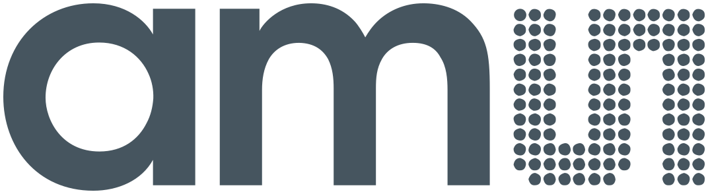
ams - austriamicrosystems AG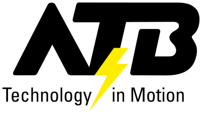
ATB Austria Antriebstechnik AG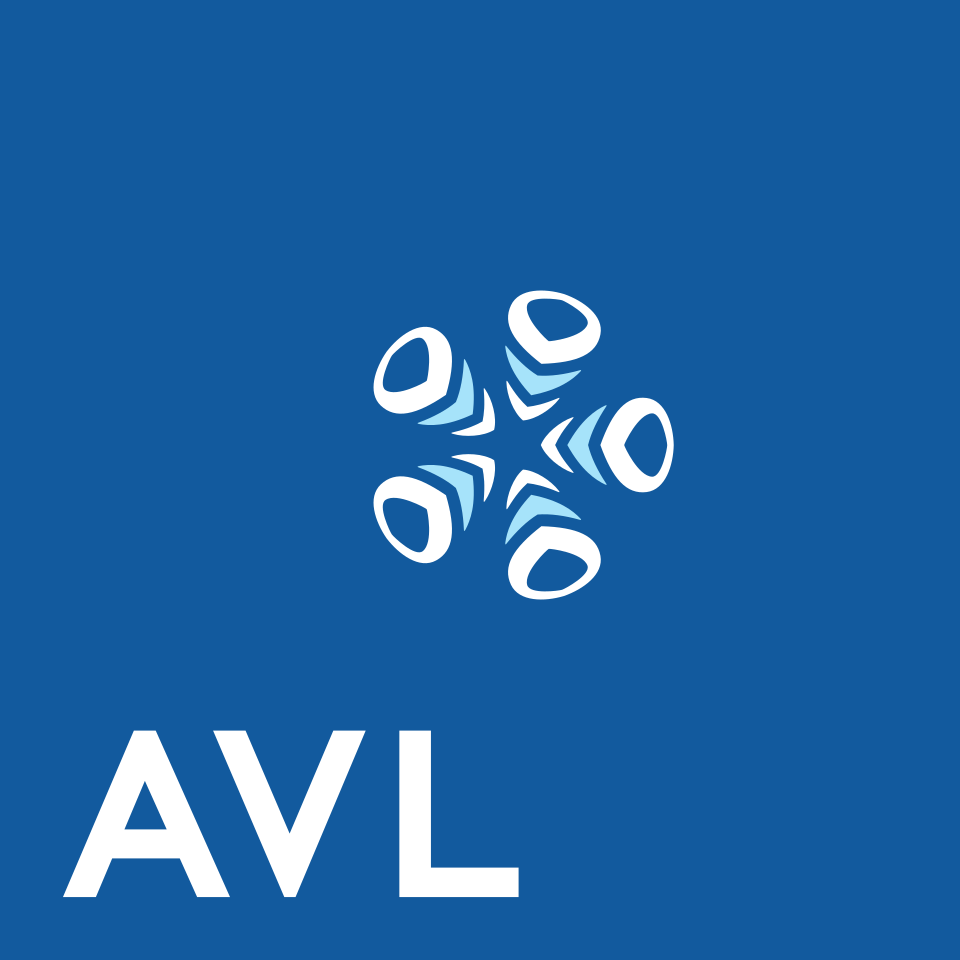
AVL List GmbH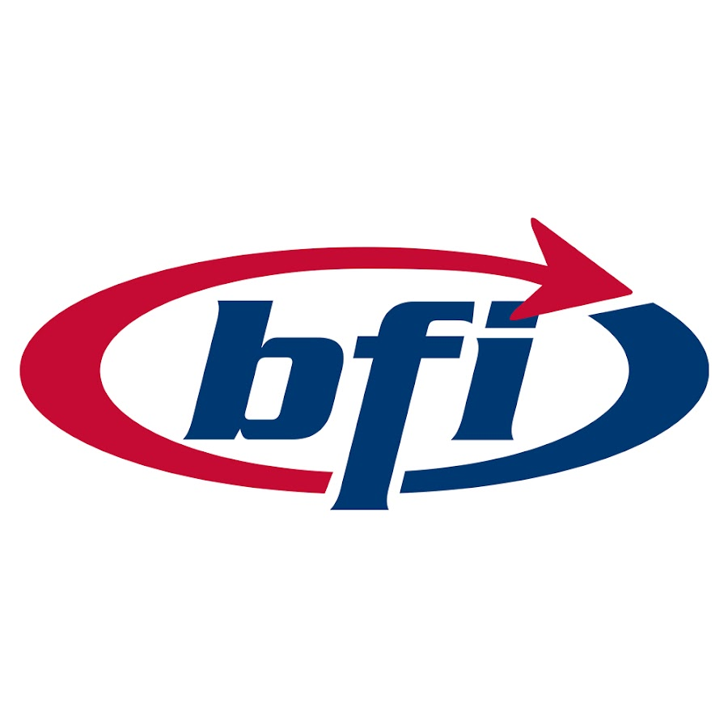
BFI Steiermark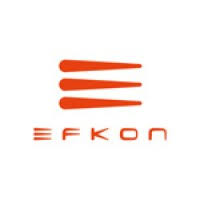
Efkon AG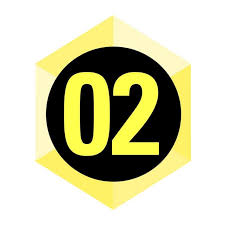
FH Campus 02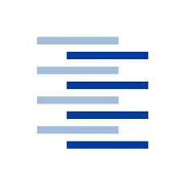
FH Hamburg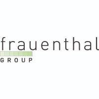
Frauenthal Holding AG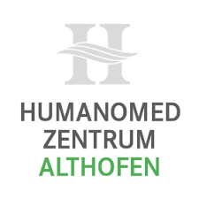
Kurzentrum Althofen GmbH- Land- und forstwirtschaftliche Ausbildungsstätte Steiermark
- Meadwestvaco GmbH
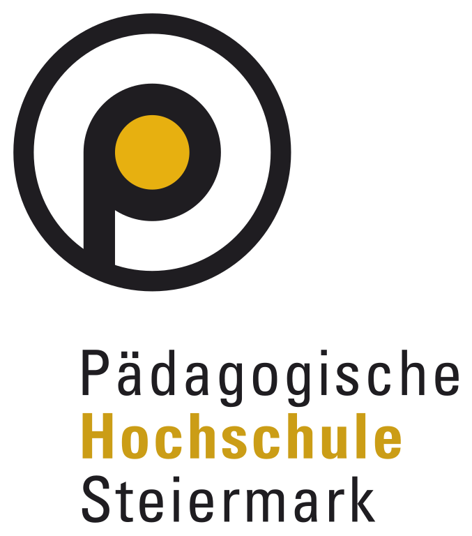
Pädagogische Hochschule Steiermark- Saubermacher Dienstleistungs AG
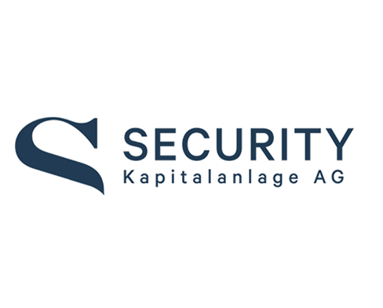
Security KAG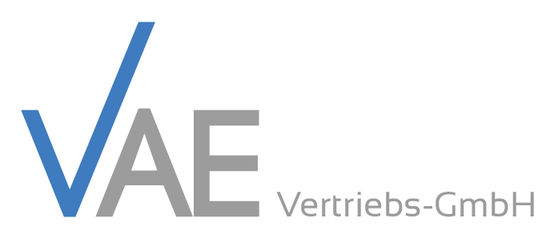
VAE GmbH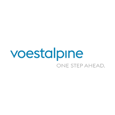
voestalpine AG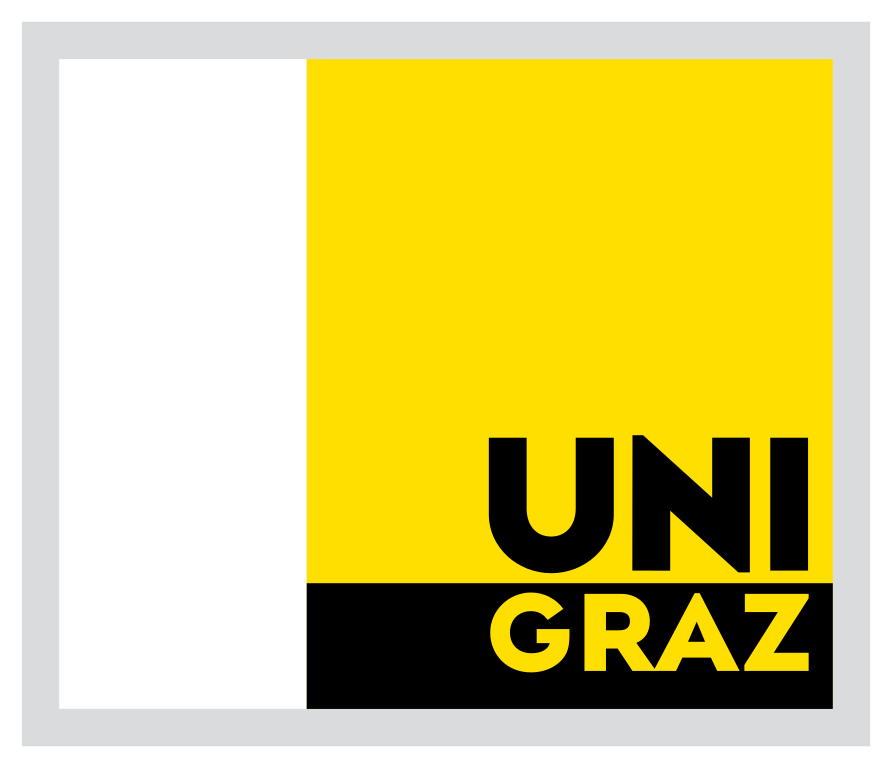
Universität Graz- WIFI Steiermark
- ZAT GmbH
- u. v. m.
Kontakt